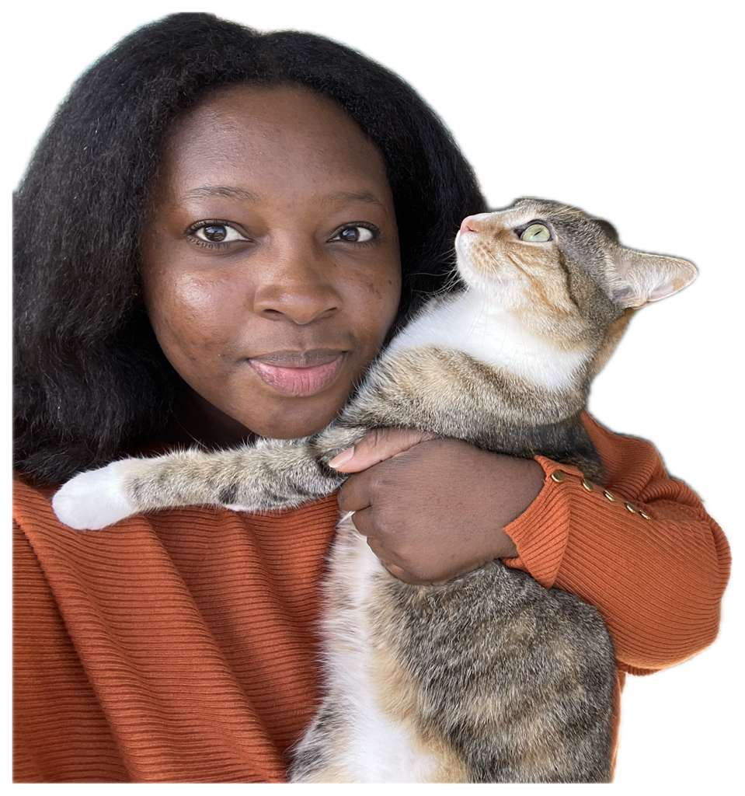

Winnie Odokara: Introduction

- Personal Background: I enjoy learning new skills and exploring topics that interest me. I also like challenging myself academically and personally.
- Professional Background: My background includes experience in business and working with people. Right now, I am focused on improving my technology and problem-solving skills through computer science studies.
- Academic Background: I am pursuing a bachelor's degree in Computer Science at UNC Charlotte with a focus in cybersecurity and networking.
- Background in this Subject: I am still building my front-end web development skills, and I want to better understand how websites are structured, styled, and connected.
- Primary Computer: Dell laptop running Windows 11, mainly used at home for schoolwork, coding, and studying.
- Courses I'm Taking, & Why:
- ITIS3135 - Front-End Web Application Development: To learn how to build websites and understand web technologies.
- MATH2164 - Matrices & Linear Algebra: I am taking this course because it is required for my degree and helps improve my mathematical reasoning and analytical skills.
- Funny/Interesting Item to Remember Me by: I am fluent in gibberish.
- I'd Also Like to Share: Päs’nJri-Xe’Lqx#7 ∆ Qor’vexi~Xunæri#
“One step forward, and you are no longer in the same place.”
– Chico Science